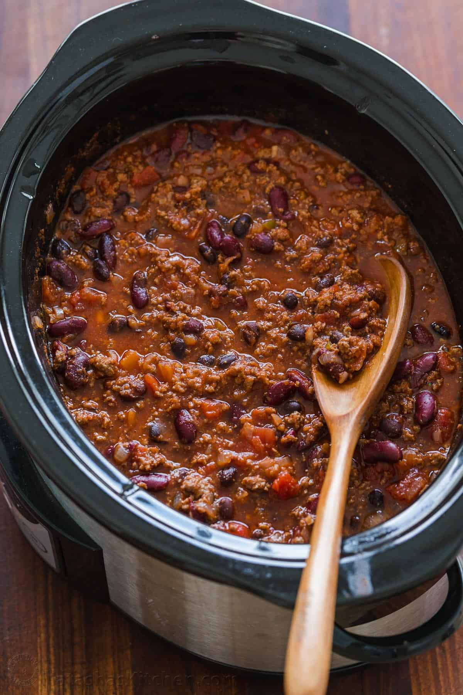

Crockpot Chili

Description
Perfect of a fall or winter day. This recipe is extremely easy to make. All
you need is a Crockpot and some ingredients you probably already have in your kitchen.
Ingredients
- 1 lb ground beef
- 28 oz chili bean
- 56 oz diced tomatoes
- 1 teaspoon garlic
- 1 1/2 teaspoon chili powder
- 1/4 teaspoon black pepper
- 1 teaspoon cumin
Steps
- Brown ground beef
- Dump everthing into Crockpot and stir
- Cook on low for 6-8 hours
- Top with shredded cheese before serving if desired